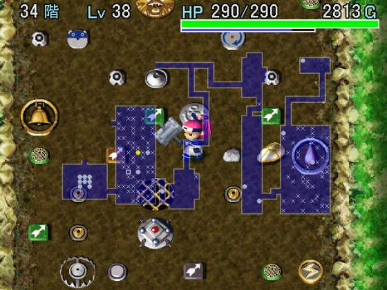

| 风来之西林外传
～女剑士飞鸟见参～
◆ カカ・ル`の试练50F突破攻略 ◆
作者：湘江浪客
『风来人绝对领域』版权所有，禁无断转载！
1回目未突破的心得：
虽然路上碰到无数次商店，但传说中的ぶっとびハンマ`还是没看见，尽管如此，在无比的压抑中，差点突破カカ・ル`的试练，由此可见，kenyo的所谓非ぶっとびハンマ`与透视腕轮配合不能突破カカ・ル―的试练的理论是错误的。
1～7阶的目标是在不饿死的前提下尽量的收集N把99支铁箭，因为几乎整个试练我们都无法与敌人肉搏单挑，为了节约陷阱，则必须以弓箭作为主要攻击手段，在路上我还不断地尽量补充木箭和铁箭，但30F以后是高危险区域，不便久留，因此30F以后的箭支主要靠以前的积蓄。
在第7阶后的村子我买进了15个弟切草，增加了60HP的上限，顿感轻松，但我不清楚最后LV42时HP怎会那么低，通常应该将近300的。皮盾是最主要的装备，省却时时惦记“烧饭”的麻烦，而米偌陶斯之斧建议放一个在道具拦里以便和陷阱配合杀敌。和ドラスの试练的“アイアンヘッドの头套装”一样，透视腕轮异常重要，远投腕轮则可以把弓箭的效率发挥最大，通行腕轮和透视腕轮配合在水域迷宫里可以藏身于黑暗的水上，这是在深层探索收集道具的绝好机会，高飞腕轮是逃出包围的最好方法，也是逃脱房间中的高等级透明怪毒手的唯一生路，我这次挂在46F，原因就是原本常见的高飞腕轮这次连一个都没找到，在房间中央遇到四级透明怪无计可施，不然凭我身上的道具突破希望极大！总之，在カカ・ル―的试练里，除了陷阱师的腕轮最没用外，其他的腕轮都有不可替代的价值，找到了千万不要轻易舍弃。陷阱卷物的收集直接关系到你可以走多远，后期一般不可能整层探索，陷阱补充就全赖于此。
15F以前飞鸟还可以与敌人一拼，15F以后飞鸟就钻进暗无天日的迷宫里了，要想继续活下去，一味向前闯是不行的，必须慎之又慎；而敌人开始显得很BT时是在23F，大量强敌出现，若无透视腕轮料敌于先机，必死无疑，必须在敌人近身前用弓箭干掉，平均每个敌人身上要插5箭左右，所以要尽量砸陷阱收集弓矢。26F，四级鼻涕虫出现，三次攻击就可以送你回村，为了防止它的分裂，必须用陷阱辅助。30F帕欧帕欧王昂、乱马王、眠之大根、シハン出现，至于我是怎么熬过来的，我也不知道，吹飞之杖和场所替之杖从这开始体现了巨大的价值，在接近40F时，找个比较清净的大房间，把身上的陷阱卷物全读了，整顿整顿家伙，准备亡命天涯，40F以后恐怕是没有什么心情读陷阱卷物的。40F以后四级透明怪出现，最可怕的是投石巨猪与水龙同时现身，石头龙炎满天飞！戴上まもりの腕逃命，糟糕，落穴用完了……
令人闻风丧胆的恶魔袋鼠是没有的，可是一级的袋鼠在14~50F的广大区域内有分布。
2回目踩平的心得：
以前说要写一篇《奈落传》，但年代久远，资料已无法考证，正好在下于2004年4月9日晚21时通过カカ・ル`の试练50F，于是记下经过心得，聊作充数。该篇游记绝对图文并茂，音容并存，声泪俱下，惊天地泣鬼神！希望对大家有所获益。
攻略方针：
カカ・ル`の试练的难度之所以被评为六星，是因为敌人实力阶梯上升得非常大，如在ドラスの试练中出现在60F以上的四级鼻涕虫しおかんべん在カカ・ル`の试练的27层就出现了，在白蛇岛80F出现的パオパ王`ン在28F就已经登场，它们HP、攻击力非常之高，对于几乎身无片甲的飞鸟来说，几乎在整个试练期间都几乎无法与它们肉搏单挑的，而攻击命中时将敌人吹飞四格远的“神器”ぶっとびハンマ`只在商店有卖，而且出现几率非常之低，可遇而不可求，因此，在下一开始就做好以远程弓箭为主要攻击手段的准备。在保证不被饿死的前提下，利用地形与コドモ檐收集N把99支铁箭就是序盘1～7层的主要任务了。看我收集了1把99支木箭和2把99支铁箭，基本完成目标。
在该迷宫中飞鸟HP上限的高低直接关系到飞鸟的生存能力，因此在7F后的二古玉村购入大量弟切草提升飞鸟的HP就显得异常重要。在下卖光了除了皮盾、腕抡、弓矢、保存壶、一个回复壶以外的所有东西，丢掉了除デロデロの的所有陷阱，买入了15个弟切草，飞鸟提升了60的HP后就显得不那么脆弱，可以和8、9F出现的敌人肉搏了。
若有兴趣，可在8、9F利用弓矢、イカリのF、にぎり浠提升满腹度上限至200%，但我觉得不是十分必要，加上敝人十分的懒，所以只加了30%左右的上限。
10F后就进入有视线限制的迷宫了，在这为了发挥弓箭的威力，最好戴上透视腕轮，这个与ドラスの试练“アンアイヘッドの头套装”是一个道理,在カカ・ル―の试练用透视腕轮料敌于先机，再用弓箭提前干掉敌人是基本的生存法则。
踏破铁鞋无觅处，得来全不费功夫！在10F的商店里面，竟然陈列着一把ぶっとびハンマ`！千载难逢！竟然遇上了，就是砸锅卖铁也要买入手！抛下皮盾，扛上ぶっとびハンマ`以后，所有的敌人再难接近飞鸟了，从而节约了大把的弓箭和陷阱，最终为突破奠定良好的根基！在下几天前在没有ぶっとびハンマ`的情况下闯到46F还有余力，还夸口不依靠ぶっとびハンマ`来突破カカ・ル―の试练，不想没有那个机会了，真是讽刺啊。
一路上遇神杀神，遇佛杀佛，好不快活……
22F的一个房间版开场怪物屋，没什么好办法，只好用落し穴逃跑。
有如地狱般的23F到了，ソニックイノシシ（LV3野猪）出现，超高的HP，霸道的攻击力太可怕了！不过依靠ぶっとびハンマ`缓缓前进，它没法近身，在有水域的阶层里，在下就用通行腕轮与透视腕轮藏在黑暗的水面上，看着在陆地上忙碌的众生，悠哉悠哉！27F出现的しおかんべん的分裂有点麻烦，费了在下不少脑筋，两倍速的暴れR将始终是令人头疼的角色，在房间里遇到常常令在下处在红血的边缘，曾几次在房间中央遇见2极透明怪ファントムデビル，而高飞腕轮还没入手，在下只好立刻用バネ逃走，除了这几个怪物外，在ぶっとびハンマ`的效果下，其他的敌人都不足为惧。由于20~30F的战略重点是收集军资，所以每一层每个房间我都几乎探索到了，若非拥有ぶっとびハンマ`，在下是绝对不敢如此乱逛的，尽管如此，しおかんべん、暴れR将的存在令我的日子过得还是很艰难的，加之LV2投石猪デブ`チョ的骚扰，我用坏了两个透视腕轮。
最大的麻烦却是30F以后出现的投石巨猪デブ`トン，十格的投石攻击，60的攻击力，在下一度被砸得半死。但在32层终于得到远投腕轮，于是在下开始利用壶里储存的N把99支弓箭，配合透视腕轮进行超远程攻击，无数的投石巨猪被射死在百步之外！无论是否得到ぶっとびハンマ`，此阶段用透视、远投腕轮配合弓矢进行超远程攻击都是最好的策略，可以有效地对付デブ`トン的投石和しおかんべん的分裂，而序盘弓箭收集是否到位直接关系到该战略能否顺利实行。
图为用远投腕轮射羊肉串！
34F，终于找到一个比较满意的阶层和一（两）个比较满意的房间，读了三个ワナの物补给物资，准备冲刺。除了落し穴，就只收集デロデロの与地雷，此乃择陷阱中精华之精华也。

托ぶっとびハンマ`的福，在下物资丰富，粮草充足，自从34F以后开始进行找楼梯行动以来，遇见怪物一遛串的，投一个デロデロの；碰上一大堆的就是一个地雷，出手豪爽，干净利落。既然决心逃跑，那吹飞之杖和场所替之杖就有很重要实用价值，有必要收集几根。40F以后3倍速透明怪和水龙出现，通常在カカ・ル―の试练里是看不见透明怪的，所以不知是ミラ`ジュデビル还是アストラルデビル，在靠墙处与通道中遭到攻击可以对墙投掷地雷瞬杀，但在房间中央遇见时只有用高飞腕轮逃跑这唯一生路；投石巨猪デブ`トン持续出现到45F以上，它的石块和水龙龙炎夹击会让你苦不堪言，不过，既然在下的逃跑信念无比地坚定，快速潜行中倒也没出什么乱子，其中还有好几层楼梯就在屁股后面，运气好得要命！
47～50F用了身上的四个落し穴就搞掂！历时3个半小时，过得浑浑噩噩，不知所以……
在这3个小时的过程中，我找到了カカ・ル―の试练的最大弱点，那就是“只有50F”！至始至终，弓箭的收集、陷阱的选择、攻击的方式、疾逃的战略，归根到底无一不是冲着“只有50F”这个特点而去的，在充分了解该迷宫各要素的前提下，针对“只有50F”来部署战略，才是突破6星难度カカ・ル―の试练的关键所在！
各类陷阱重要程度：
ぶっとびハンマ`入手的情况下：
ワナのF ★★★★★★ 陷阱的祖宗！
落し穴 ★★★★★★ 40F后大撤退必要物资，逃离开场版怪物屋唯一有效途径
デロデロの ★★★★★ 必杀，兼备种小麦
地雷 ★★★★ 必杀在一堆的家伙，兼备煮饭
大型地雷 ★★★★ 必杀在一堆的家伙，煮饭则火候过猛
バネ ★★★ 高飞腕轮入手前的替代品
毒矢 ★★★ 关键时候很有用
いかずちのF ★★★ 在普通怪物屋门口装两个，然后进行安培导电实验，对付普通怪物屋的不二法门
其余的基本无视。
通常情况下是没有ぶっとびハンマ`的，建议身披皮盾以减少时时烧饭的麻烦，但最好在道具栏里放一个木づち或ミノタウロスの斧备用，装备后可以增加7或14左右的攻击力，以有效配合陷阱杀敌。
ワナのF ★★★★★★ 陷阱的祖宗！
落し穴 ★★★★★★ 40F后大撤退必要物资，逃离开场版怪物屋唯一有效途径
デロデロの ★★★★★ 必杀，兼备种小麦
地雷 ★★★★ 必杀在一堆的家伙，兼备煮饭
眠りガス ★★★★ 配合木づち或ミノタウロスの斧杀敌
毒矢 ★★★★ 配合木づち或ミノタウロスの斧杀敌
g足のF ★★★ 配合木づち或ミノタウロスの斧杀敌
猡い瘟F ★★★ 配合木づち或ミノタウロスの斧杀敌
大型地雷 ★★★ 必杀在一堆的家伙，煮饭则火候过猛
いかずちのF ★★★ 在普通怪物屋门口装两个，然后进行安培导电实验，对付普通怪物屋的不二法门
バネ ★★★ 高飞腕轮入手前的替代品
装渫猡 ★★★ 对付某些特技很令人头疼的家伙
其余的基本无视。
最后劝大家试试该迷宫，虽然有点难度，但是很过瘾的……活活……
Kenyo乱入：湘江浪客前辈，你说了这么一大篇，真是辛苦你了，来，坐下来喝口茶吃个包先了，等我来说两句。
咳……嗯……，大家通过湘江浪客前辈的心得应该知道怎么突破カカ・ル`の试练50F了吧？说到外传迷宫的难度，カカ・ル`の试练50F并不是最高的，CHUNSOFT后来增加的魔天挑战迷宫，除了猿奇魔天の挑椋ㄍ档撩怨，50F）和冥炎魔天の挑椋HP固定迷宫，无限F）相对较为简单之外（5星难度），其余的4个魔天挑战：y猫魔天の挑椋ㄏ葳迕怨，99F），Bw魔天の挑椋秘技迷宫，99F），骨心魔天の挑椋ü治锵涿怨，99F），幽幻魔天の挑椋ㄕ让怨，99F），均在6～7星难度以上。特别是幽幻魔天の挑椋接近8星的难度，必须要带1个仲间才能进迷宫，仲间或飞鸟死亡都算失败……嗯，只有魔天挑战才是真正的迷宫啊！！！
|